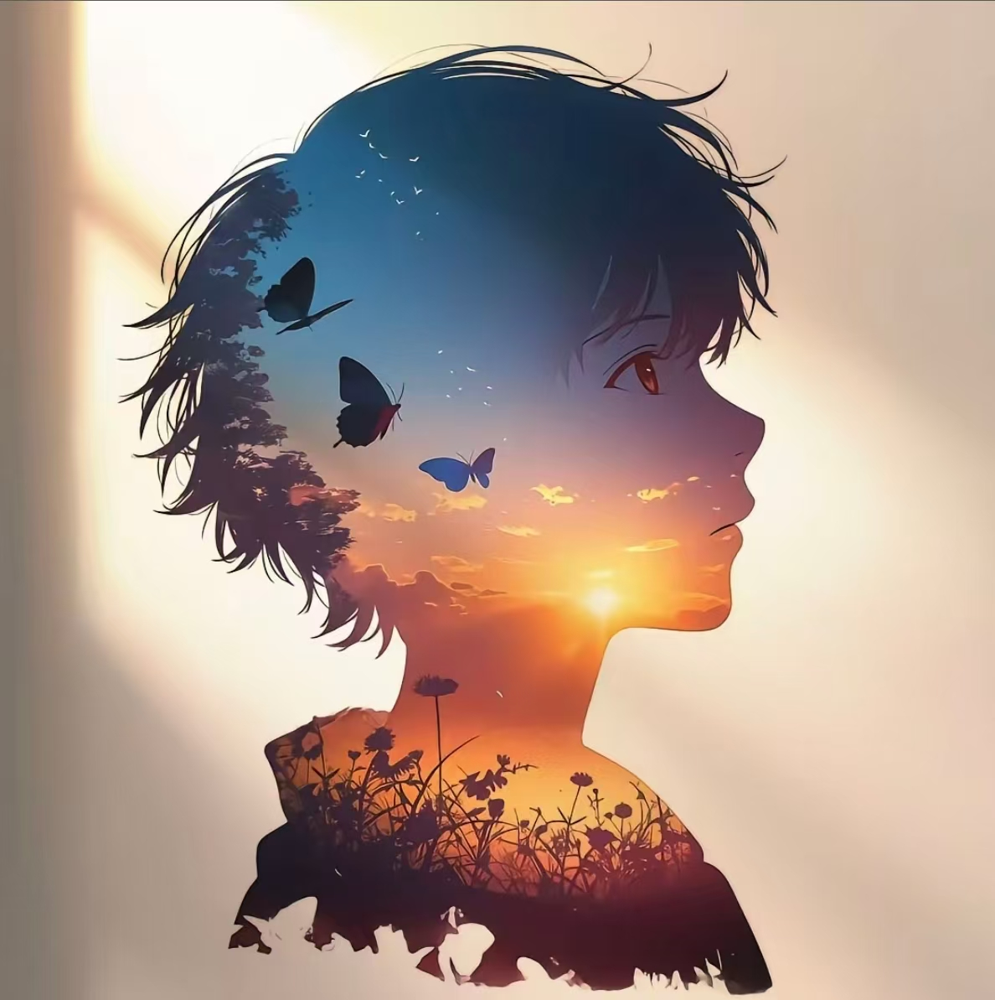

2026 级 · 人工智能专业
哈尔滨市
哈尔滨金融学院

郑毅焕
我是
永远谦卑 永远进步
哈尔滨金融学院人工智能专业 2026 级，对人工智能有强烈兴趣与持续自驱的学习能力。熟练掌握
Word / Excel / PPT，能独立完成 AIGC 视频制作、剪辑、海报设计与个人网站搭建；擅长提示词工程、
自动化工作流与智能体搭建，善于借助 AI 放大个人效率。曾获省级机器人竞赛二等奖及多项市级奖项，
初中至高中期间进入学生会工作，担任语文、数学课代表，沟通协作与责任心突出。
提示词工程
智能体搭建
AIGC 视频
自动化工作流
视频剪辑
海报设计
个人网站搭建
Word / Excel / PPT
人工智能一班 · 2026.09 入学
Core Stats
市级机器人比赛多次获奖 · 校内外 AI 内容创作实践持续进行中
AIGC / 剪辑
主力项目
AIGC 视频创作
独立完成从脚本撰写、分镜设计到 AI 生成与后期剪辑的全流程，注重视听节奏与信息传达。
AI 视频生成
剪辑
脚本分镜
字幕包装
- 单条视频制作周期较传统流程缩短 50% 以上。
- 产出多支可用于社团展示与个人主页的成品视频内容。
Skills
办公与效率
Word 文档排版
Excel 数据处理
PPT 演示设计
AI 辅助办公
AI 应用
提示词工程
智能体搭建
AIGC 视频生成
自动化工作流
设计与剪辑
视频剪辑
海报设计
排版与配色
视觉内容包装
开发基础
HTML / CSS
JavaScript
响应式布局
网页动效实现
前端 / 设计
单页个人简历网站
从零设计并实现一个单文件个人简历网站，纯原生实现、零外部依赖，可直接在国内网络环境打开。
HTML
CSS
JavaScript
响应式布局
深浅色主题
- 首屏 1 秒内完成渲染，无任何外部 CDN 请求，加载迅速稳定。
- 支持深浅色模式切换、一键打印导出 PDF 与键盘无障碍交互。
查看作品
AI 应用
智能体（Agent）搭建
围绕学习与内容生产场景搭建专属智能体，把重复性的人工操作交给可复用的 AI 流程。
提示词工程
工作流编排
知识库
角色设定
- 沉淀多套可复用提示词模板，任务处理效率提升约 40%。
- 覆盖资料整理、内容生成、答疑问答等多个高频场景。
效率工具
自动化工作流
将资料搜集、内容整理与成品输出串联成一条自动化链路，减少跨工具反复切换的时间成本。
AI 工作流
批量处理
自动化串联
- 重复性工作耗时从小时级压缩至分钟级。
- 流程高度可复用，可快速迁移到新的任务场景。
Experience Timeline
校园职务 · 竞赛经历 · 持续学习
左右滑动查看
视觉设计
海报设计与视频剪辑
为班级活动与个人展示设计海报、剪辑短视频，注重视觉层级与关键信息的清晰传达。
版式设计
配色体系
剪辑节奏
信息层级
- 累计输出多套视觉物料，获得同学与老师的认可与采用。
- 形成个人可复用的设计模板库，出图效率显著提升。
Education & Certificates
哈尔滨金融学院
本科 · 人工智能专业
2026.09 – 2030.06
人工智能一班
- 主修方向：人工智能，聚焦大模型应用、数据分析与智能系统实践。
- 入学即保持对 AI 前沿技术的持续关注，主动将课堂知识与实际工具结合。
- 未来规划：持续深耕人工智能领域，向算法应用与智能体工程方向深入学习。
证书与荣誉
AI 相关技能证书（多项）
省级机器人竞赛二等奖
市级机器人比赛奖项（多次）
提示词工程 / AIGC 应用能力
计算机与办公软件应用
Certificates Gallery
证书与荣誉 · 图集
滚轮加速滚动 · 悬停柔光 · 点击放大